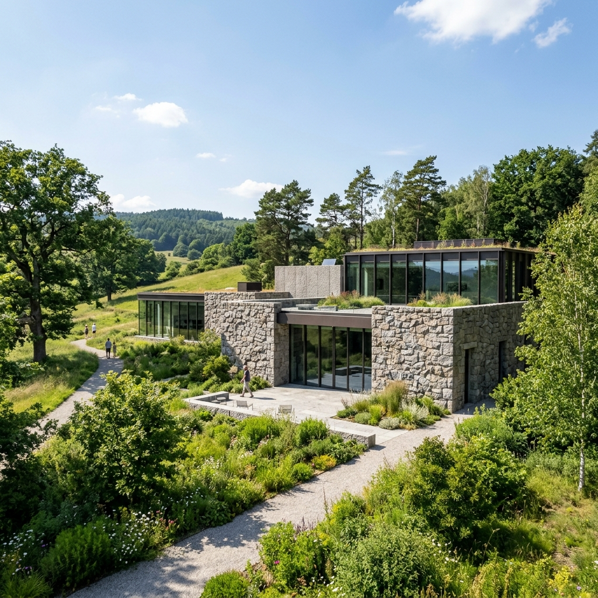
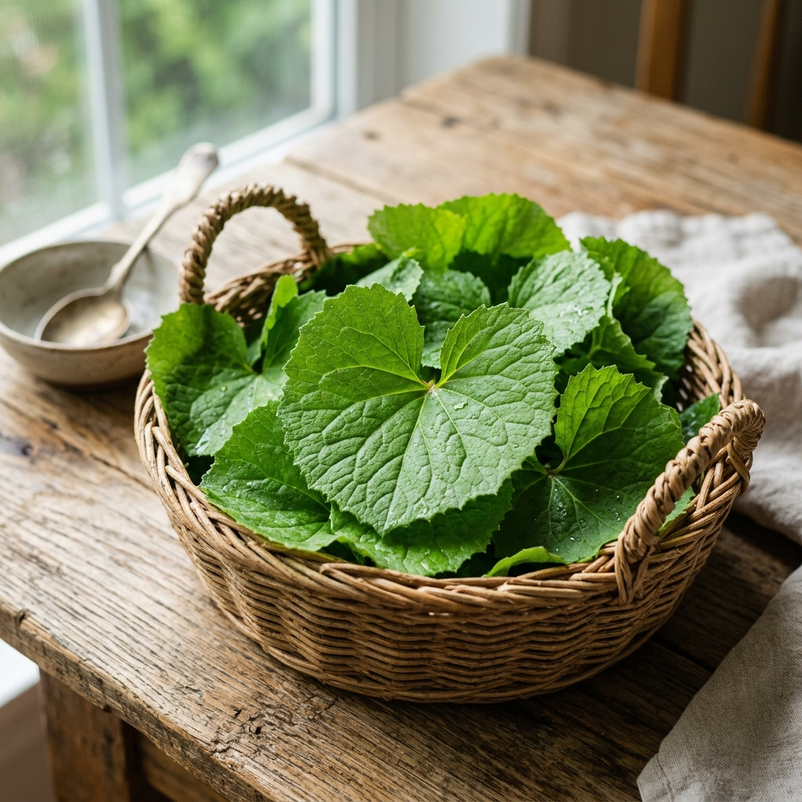
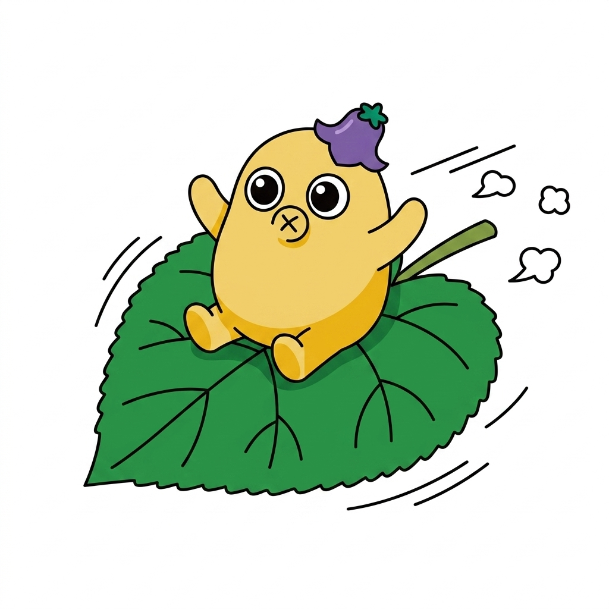
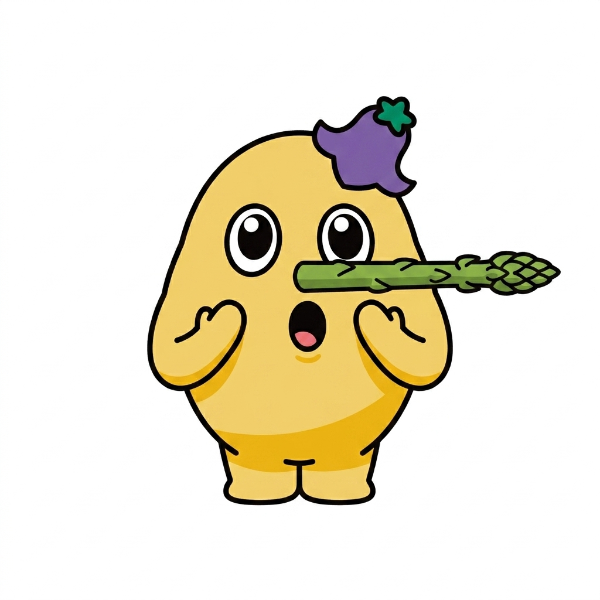
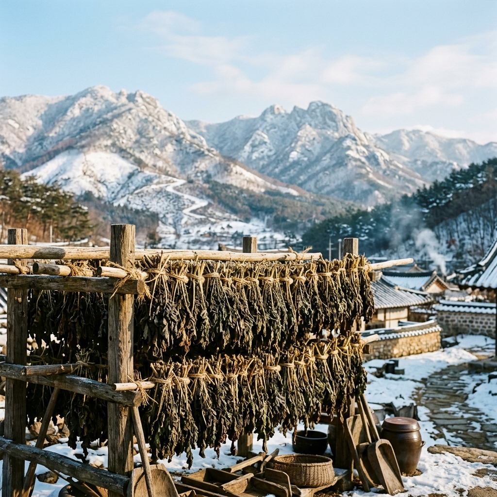
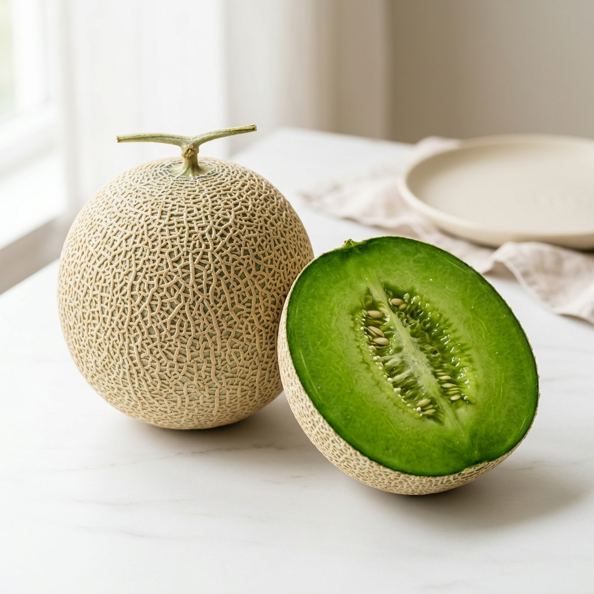
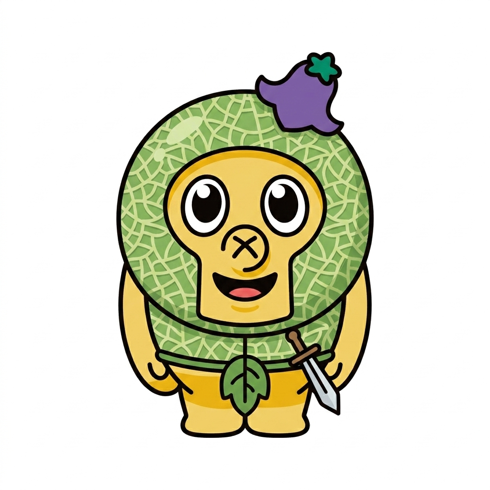
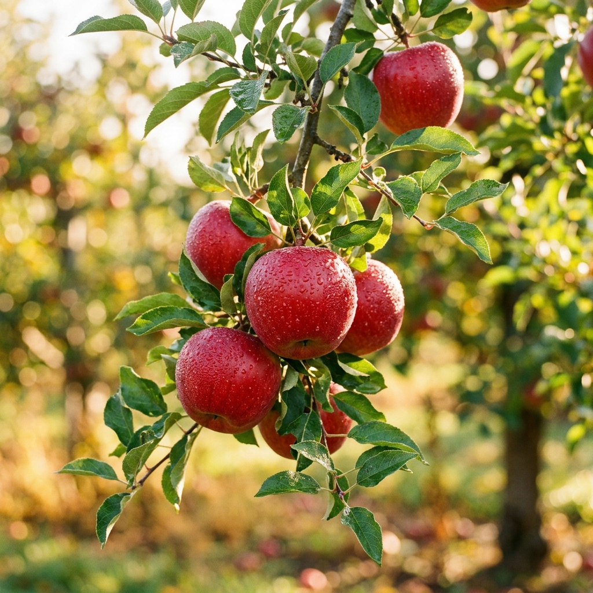
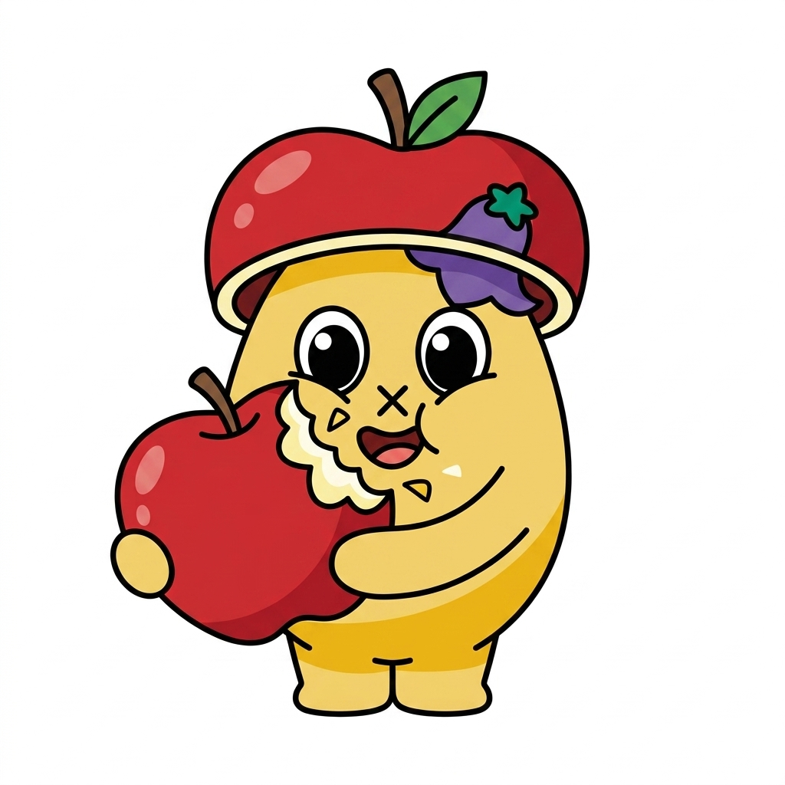

양구 한눈에 보기
처음 오시는 분들을 위해, 한반도의 정중앙 양구군의 위치와 관광지도를 안내해 드립니다.
종합 지도
이름
분류
취급/진료: 내용
관광지도 미리보기

10년 전 그 시절의 청춘과 낭만이 머무는 곳, 맑고 푸른 양구에서 여러분의 가장 눈부신 순간을 되찾아보세요.
원하는 테마의 퍼즐 조각을 아래 빈칸에 끌어다 놓아 나만의 여행 코스를 완성해보세요! (클릭하여 삭제 가능)
영상으로 먼저 만나는 아름다운 양구의 매력
양구에서 꼭 가봐야 할 아름다운 명소들을 소개합니다.
민통선 내 천혜의 비경을 간직한 생태계의 보고. 맑은 계곡물과 천연기념물 열목어가 서식하는 청정 지역입니다.
해발 1,000m가 넘는 산들로 둘러싸인 거대한 화채그릇 모양의 지형. 아침 안개가 피어오를 때의 장관이 압권입니다.
파로호 상류에 조성된 국내 최대 규모의 인공 습지로, 한반도 지형을 그대로 본뜬 아름다운 산책로가 있습니다.

한국 근현대 대표 화가 박수근 선생의 생가터에 건립된 미술관. 아름다운 건축물과 함께 예술적 영감을 얻어보세요.
양구의 맑은 공기와 건강한 흙이 키워낸 5대 대표 특산물을 만나보세요.


대암산 고지대의 청정 자연에서 자라 깊은 향과 쌉싸름한 맛이 일품입니다. 피로 회복과 봄철 입맛을 돋우는 데 최고의 웰빙 산나물입니다.

큰 일교차 덕분에 당도가 높고 식감이 매우 아삭하고 부드럽습니다. 피로 회복에 좋은 아스파라긴산이 풍부한 양구의 대표 효자 작물입니다.

해발 1,000m가 넘는 펀치볼 분지의 차가운 바람과 눈을 맞으며 얼고 녹기를 반복해, 껍질이 얇고 식감이 마법처럼 부드럽습니다.


풍부한 일조량과 일교차로 인해 그물망이 균일하고 당도가 평균 15브릭스 이상으로 매우 높으며, 과육이 단단해 저장성이 뛰어납니다.


기후 변화로 사과 재배의 최적지가 된 양구의 고지대에서 생산되어, 당도가 높고 과육이 매우 단단하며 아삭아삭 씹히는 맛이 최고입니다.
우리나라 4극지점의 중앙경선과 중앙위선이 교차하는 국토정중앙 양구에서 특별한 기운을 받아가세요.
이곳을 클릭하여 정중앙의 기운을 뽑아보세요!
처음 오시는 분들을 위해, 한반도의 정중앙 양구군의 위치와 관광지도를 안내해 드립니다.
취급/진료: 내용
양구 여행에 대해 궁금한 점이 있으신가요? 편하게 문의해 주시면 이메일로 친절히 답변해 드립니다.
강원특별자치도 양구군 양구읍 관공서로 38
033-480-2675 (관광안내소)
alsgnek5@gmail.com
Description goes here.
Description goes here.
팁 내용이 여기에 들어갑니다.